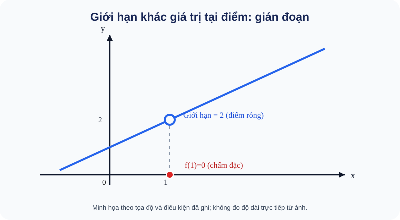
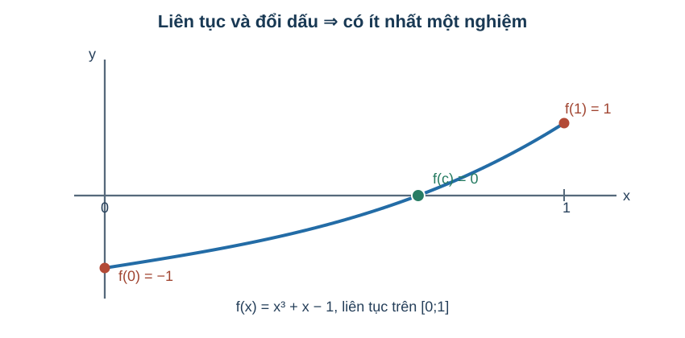

Bài 17. Hàm số liên tục
TOÁN 11 · CHƯƠNG V · SGK KẾT NỐI TRI THỨC
Liên tục nghĩa là xu hướng gần điểm khớp với giá trị tại điểm; mở rộng tới khoảng và đoạn, rồi dùng tính chất phép toán và đổi dấu để chứng minh có nghiệm.
1. Khám phá kiến thức
Bài 16 cho thấy một hàm có thể có giới hạn khi tiến gần điểm \(a\) nhưng không có giá trị tại \(a\). Nếu ta điền giá trị thích hợp vào “lỗ”, đồ thị trở nên nối liền; còn điền giá trị khác, một chấm đứng riêng sẽ vẫn lệch khỏi xu hướng. Đó là lí do học tính liên tục. Bài này từ tiêu chuẩn tại một điểm, sang cả khoảng/đoạn, rồi tới tính chất giúp tính giới hạn và chứng minh tồn tại nghiệm.
1.1. Hàm số liên tục tại một điểm
Xét \(f(x)=x+1\) với \(x\ne1\). Các giá trị ở gần 1 tiến về 2. Nếu quy định thêm \(f(1)=2\), giá trị tại điểm khớp đúng giới hạn: hàm liên tục tại 1. Nếu lại quy định \(f(1)=0\), các giá trị gần 1 vẫn tiến về 2, nhưng ngay tại 1 hàm bằng 0, nên hàm gián đoạn tại điểm đó.

Vì vậy, để kiểm liên tục tại \(a\) cần đủ ba việc: (1) \(f(a)\) xác định; (2) \(\lim_{x\to a}f(x)\) tồn tại và hữu hạn; (3) giới hạn đó bằng \(f(a)\). Đây không phải ba định nghĩa khác nhau mà là cách kiểm tra đủ điều kiện của cùng một định nghĩa. Hình vẽ “nét bút liền” chỉ là trực giác, không được thay cho việc kiểm tra bằng định nghĩa.
Với hàm cho bằng nhiều công thức, ở điểm nối phải kiểm hai giới hạn một phía. Ví dụ \(g(x)=x+1\) khi \(x<1\), \(g(x)=m\) khi \(x\ge1\). Bên trái tiến về 2; bên phải tiến về \(m\); giá trị ngay tại 1 cũng là \(m\). Hàm liên tục tại 1 nếu và chỉ nếu \(m=2\), vì khi đó giới hạn trái/phải đều bằng 2 và bằng \(g(1)\).
Vận dụng. Cho \(h(x)=\frac{x^2-1}{x-1}\) nếu \(x\ne1\), còn \(h(1)=m\). Tìm \(m\) để \(h\) liên tục tại \(x=1\).
Đối chiếu
Lời giải: Với \(x\ne1\), \(h(x)=x+1\), nên \(\lim_{x\to1}h(x)=2\). Giá trị \(h(1)=m\) có nghĩa theo định nghĩa từng phần; liên tục khi \(m=2\).
Kiểm lỗi
Nếu chỉ rút gọn và nói “liên tục với mọi \(m\)” là đã bỏ điều kiện giới hạn phải bằng đúng giá trị tại điểm. Ngược lại, nếu quên miền \(x\ne1\) khi rút gọn sẽ tự gán sai cho biểu thức gốc.
1.2. Hàm số liên tục trên một khoảng
Một điểm liên tục mới là một thông tin cục bộ. Để nói \(f\) liên tục trên \((a,b)\), ta phải biết điều đó đúng tại mọi điểm trong khoảng. Nhưng trên đoạn \([a,b]\), hai đầu mút có cách tiến gần đặc biệt: tại \(a\) chỉ xét từ bên phải trong đoạn, tại \(b\) chỉ xét từ bên trái. Không bắt buộc xét giá trị ở phía ngoài đoạn mà hàm có thể không xác định.
Hãy xem \(f(x)=\sqrt{x}\). Hàm xác định với \(x\ge0\), liên tục ở mọi \(x>0\) nhờ tính chất giới hạn căn, và tại 0 ta có \(\lim_{x\to0^+}\sqrt{x}=0=f(0)\). Vậy nó liên tục trên \([0,9]\) (và trên \([0,+\infty)\)). Đòi tính \(\sqrt{x}\) khi \(x\to0^-\) trong số thực là yêu cầu ngoài miền xác định, không được dùng để phủ nhận tính liên tục trên đoạn.
Khi xét hàm phân thức, miền xác định quan trọng không kém công thức. \(g(x)=\frac{x+1}{x-2}\) liên tục trên \((-\infty,2)\) và \((2,+\infty)\) vì tử, mẫu là đa thức và mẫu khác 0 ở hai khoảng. Nhưng tại \(x=2\) thì \(g\) không xác định, nên không gọi liên tục tại 2. Tại đầu mút của một khoảng cần đọc đúng dạng ngoặc tròn/vuông trước khi áp điều kiện một phía.
Vận dụng. Chứng minh \(f(x)=\sqrt{4-x}\) liên tục trên đoạn \([0,4]\). Vì sao chỉ cần giới hạn trái tại \(x=4\)?
Đối chiếu
Lời giải: Với mọi \(x\in(0,4)\), \(4-x>0\) nên hàm căn liên tục. Tại \(0\), \(\lim_{x\to0^+}\sqrt{4-x}=2=f(0)\); tại \(4\), \(\lim_{x\to4^-}\sqrt{4-x}=0=f(4)\). Vậy hàm liên tục trên \([0,4]\). Tại đầu mút phải \(4\), chỉ xét giới hạn từ bên trái trong đoạn; hàm không xác định trong số thực khi \(x>4\).
Kiểm lỗi
“Liên tục trên đoạn” không chỉ là liên tục ở các điểm giữa đoạn; vẫn phải kiểm hai đầu mút đúng phía. Không bắt buộc xét phía hàm chưa được xác định.
1.3. Một số tính chất cơ bản
Khi \(f,g\) liên tục tại \(a\), ta đã biết \(\lim f=f(a)\) và \(\lim g=g(a)\). Định lí phép toán giới hạn từ Bài 16 cho phép cộng, trừ, nhân: các hàm \(f+g,f-g,fg\) đều liên tục tại \(a\). Thương \(f/g\) cũng liên tục tại \(a\) khi \(g(a)\ne0\). Đó là lí do các đa thức liên tục trên \(\mathbb R\), còn các phân thức hữu tỉ liên tục trên tập xác định của chúng, không phải ở nghiệm của mẫu.
SGK còn nhắc: \(\sin x\), \(\cos x\) liên tục trên \(\mathbb R\); \(\tan x,\cot x\) liên tục trên những điểm mà chúng xác định. Không nên thuộc lòng câu “mọi hàm quen thuộc liên tục ở mọi nơi” vì hàm có mẫu, căn hoặc điểm rẽ nhánh có thể mất điều kiện xác định.
Biết có nghiệm mà chưa giải được công thức nghiệm. Nếu \(f\) liên tục trên cả đoạn \([a,b]\) và \(f(a)f(b)<0\), thì \(f\) phải nhận giá trị 0 ở ít nhất một điểm giữa \(a,b\). Hình dung một đường liền nối một điểm dưới trục hoành với một điểm trên trục: nó phải gặp trục hoành ở đâu đó. Tuy vậy, chỉ từ hai đầu trái dấu không thể nói có đúng một giao điểm; muốn duy nhất phải có chứng minh bổ sung.

Điều kiện liên tục rất quan trọng. Một hàm nhảy từ \(-1\) lên \(+1\) ngay tại một điểm có thể đổi dấu ở hai đầu mà không bao giờ nhận 0. Vì vậy nếu quên chứng minh liên tục trên đoạn, lập luận đổi dấu mất cơ sở.
Vận dụng. Chứng minh phương trình \(x^3+2x-5=0\) có ít nhất một nghiệm trong \((1,2)\). Có được kết luận nghiệm duy nhất chỉ từ dấu của hai đầu không?
Đối chiếu
Lời giải: Đặt \(q(x)=x^3+2x-5\), là đa thức nên liên tục trên \([1,2]\). \(q(1)=-2<0\), \(q(2)=7>0\), do đó tồn tại \(c\in(1,2)\) sao cho \(q(c)=0\). Dữ kiện đổi dấu và liên tục chỉ đủ kết luận ít nhất một nghiệm, không tự chứng minh duy nhất.
Kiểm lỗi
Nếu viết “có một nghiệm duy nhất” ngay sau khi thấy đổi dấu là vượt kết luận SGK. Hãy giữ chữ “ít nhất một”; nếu cần duy nhất, phải chứng minh thêm điều kiện như tính đơn điệu.
2. Kiến thức SGK
2.1. Hàm số liên tục tại một điểm
Hàm \(y=f(x)\) xác định trên một khoảng chứa \(a\) gọi là liên tục tại \(a\) nếu \(\lim_{x\to a}f(x)=f(a)\). Nếu điều kiện này không thỏa, hàm được gọi là gián đoạn tại \(a\). Để kiểm, cần \(f(a)\) xác định, giới hạn hữu hạn hai phía tồn tại, và hai giá trị ấy bằng nhau.
Dạng kiểm với hàm từng phần: Xác định \(f(a)\); tính \(\lim_{x\to a^-}f(x)\), \(\lim_{x\to a^+}f(x)\) nếu miền có cả hai phía; chỉ khi cả hai bằng \(f(a)\) mới liên tục tại \(a\).
2.2. Hàm số liên tục trên một khoảng
\(f\) liên tục trên khoảng \((a,b)\) nếu liên tục tại mọi điểm của khoảng. \(f\) liên tục trên đoạn \([a,b]\) nếu liên tục trên \((a,b)\), đồng thời \(\lim_{x\to a^+}f(x)=f(a)\) và \(\lim_{x\to b^-}f(x)=f(b)\). Nửa khoảng được hiểu tương tự: tại đầu mút thuộc miền xét chỉ yêu cầu giới hạn một phía phù hợp.
Các hàm cơ bản SGK: Đa thức, \(\sin x,\cos x\) liên tục trên \(\mathbb R\). Hàm \(\tan x,\cot x\), hàm phân thức hữu tỉ liên tục ở những điểm thuộc tập xác định; hàm căn \(\sqrt{x}\) liên tục trên \([0,+\infty)\) theo điều kiện phải ở 0. Không suy rộng qua điểm mà hàm không xác định.
Ví dụ kiểm: \(f(x)=\sqrt{x}\) liên tục trên \([0,9]\) vì nội đoạn liên tục, \(\lim_{x\to0^+}\sqrt{x}=0=f(0)\), \(\lim_{x\to9^-}\sqrt{x}=3=f(9)\).
2.3. Một số tính chất cơ bản
Nếu \(f,g\) liên tục tại \(a\), thì \(f+g\), \(f-g\), \(fg\) cũng liên tục tại \(a\). Thương \(f/g\) liên tục tại \(a\) khi thêm điều kiện \(g(a)\ne0\). Dùng cùng điều kiện miền xác định để áp dụng tính chất cho các hàm đa thức, lượng giác, phân thức.
Nhận xét SGK — Đổi dấu trên đoạn liên tục: Nếu \(f\) liên tục trên \([a,b]\) và \(f(a)f(b)<0\), thì tồn tại ít nhất một \(c\in(a,b)\) sao cho \(f(c)=0\). Đây là kết quả về sự tồn tại, không tự bảo đảm nghiệm duy nhất. Dùng đúng điều kiện cả đoạn và hai giá trị đầu trái dấu.
Quy trình chứng minh tồn tại nghiệm: (1) Đặt hàm \(f\) với phương trình \(f(x)=0\); (2) chứng minh liên tục trên toàn \([a,b]\); (3) tính chính xác \(f(a),f(b)\) và kiểm tích âm; (4) kết luận có ít nhất một nghiệm trong \((a,b)\).
Lưu ý vận dụng thực tế: Một đại lượng liên tục đi từ dưới ngưỡng lên trên ngưỡng thì phải đạt ngưỡng ở một thời điểm trung gian. Khi mô hình thời gian, nhiệt độ hoặc vận tốc, phải có căn cứ đại lượng biến đổi liên tục; không lấy hình vẽ hay số liệu trung bình thay chứng cứ liên tục.
3. Ví dụ
3.1. Liên tục tại một điểm có mẫu khác 0
Đề bài. Xét tính liên tục của \(f(x)=\frac{x+1}{x-1}\) tại \(a=2\).
Phân tích: Trước hết kiểm \(a\) thuộc tập xác định, rồi tính giới hạn của thương khi mẫu tiến về giá trị khác 0.
Lời giải. Vì \(2-1\ne0\), \(f(2)=(2+1)/(2-1)=3\). Do tử/mẫu đều liên tục tại 2, mẫu khác 0, \(\lim_{x\to2}f(x)=3=f(2)\). Vậy \(f\) liên tục tại \(x=2\).
Kiểm lại: Cần ghi cả \(f(2)\) và giới hạn, không chỉ thay x vào biểu thức rồi gọi là chứng minh.
3.2. Chọn giá trị tại điểm thủng để liên tục
Đề bài. Cho \(f(x)=\frac{x^2-1}{x-1}\) khi \(x\ne1\) và \(f(1)=m\). Tìm \(m\) để \(f\) liên tục tại 1.
Phân tích: Với \(x\ne1\), phân tích tử \(x^2-1=(x-1)(x+1)\). Liên tục yêu cầu giới hạn ở gần 1 bằng giá trị được gán tại 1.
Lời giải. \(\lim_{x\to1}f(x)=\lim_{x\to1}(x+1)=2\), còn \(f(1)=m\). Hàm liên tục tại 1 khi và chỉ khi \(m=2\).
Kiểm lại: Rút gọn chỉ đúng \(x\ne1\); khi \(m=2\), đồ thị được lấp đúng “lỗ”, không phải vì phân thức gốc bỗng có nghĩa tại 1.
3.3. Không có giá trị tại điểm nào sửa được bước nhảy
Đề bài. Cho \(g(x)=x\) với \(x<0\), \(g(0)=m\), và \(g(x)=x+1\) với \(x>0\). Có chọn được \(m\) để hàm liên tục tại 0 không?
Phân tích: Nếu hai giới hạn một phía khác nhau, thay một điểm \(g(0)\) không thể làm giới hạn hai phía xuất hiện.
Lời giải. \(\lim_{x\to0^-}g(x)=\lim_{x\to0^-}x=0\), còn \(\lim_{x\to0^+}g(x)=\lim_{x\to0^+}(x+1)=1\). Hai giới hạn khác nhau nên không có giới hạn hữu hạn hai phía. Vì vậy không có giá trị \(m\) nào làm \(g\) liên tục tại 0.
Kiểm lại: Đây là gián đoạn kiểu bước nhảy, khác với ví dụ 3.2 (chỉ thủng một điểm). Không tự chọn \(m=(0+1)/2\).
3.4. Liên tục trên đoạn có hai đầu mút
Đề bài. Chứng minh \(f(x)=\sqrt{x}\) liên tục trên \([0,9]\).
Phân tích: Trên \((0,9)\), căn là hàm liên tục; hai đầu mút cần giới hạn đúng phía, không kiểm phía ngoài miền xác định.
Lời giải. Với \(x\in(0,9)\), hàm căn liên tục. Tại 0, \(\lim_{x\to0^+}\sqrt{x}=0=f(0)\). Tại 9, \(\lim_{x\to9^-}\sqrt{x}=3=f(9)\). Vì vậy \(f\) liên tục trên \([0,9]\).
Kiểm lại: Không có \(\sqrt{x}\) thực khi \(x<0\), nên không cần/không được đòi giới hạn trái tại 0 để xét liên tục trên đoạn này.
3.5. Khoảng liên tục của phân thức
Đề bài. Tìm các khoảng liên tục của \(f(x)=\frac{x+1}{x-2}\).
Phân tích: Hàm phân thức hữu tỉ liên tục trên miền xác định; giải điều kiện mẫu khác 0 rồi ghi thành các khoảng.
Lời giải. \(x-2\ne0\) khi \(x\ne2\), nên miền xác định là \((-\infty,2)\cup(2,+\infty)\). Tử và mẫu là đa thức liên tục, mẫu không bằng 0 trên từng khoảng; do đó \(f\) liên tục trên từng khoảng \((-\infty,2)\) và \((2,+\infty)\).
Kiểm lại: Tại \(x=2\), hàm không xác định nên không gọi liên tục tại đó. Không tự ghi “liên tục trên \(\mathbb R\)”.
3.6. Quy tắc tổng, thương của các hàm liên tục
Đề bài. Cho \(h(x)=\frac{x^2+1}{x+1}\). Chứng minh liên tục tại \(x=1\) và giải thích vì sao không áp dụng ngay quy tắc thương tại \(x=-1\).
Phân tích: Tử và mẫu là đa thức liên tục. Quy tắc thương yêu cầu mẫu tại điểm xét khác 0.
Lời giải. Tại 1, mẫu \(1+1=2\ne0\), nên \(h\) liên tục tại 1, và \(h(1)=(1^2+1)/(1+1)=1\). Tại \(-1\), mẫu bằng 0 nên hàm gốc không xác định; không thể áp quy tắc thương để kết luận liên tục tại \(-1\).
Kiểm lại: Việc tử vẫn hữu hạn không khắc phục được mẫu bằng 0; điều kiện tồn tại hàm tại điểm là bắt buộc.
3.7. Chứng minh tồn tại nghiệm bằng tính đổi dấu
Đề bài. Chứng minh phương trình \(x^3+x-1=0\) có ít nhất một nghiệm trong \((0,1)\).
Phân tích: Chọn \(p(x)=x^3+x-1\), xác nhận là đa thức liên tục trên toàn đoạn rồi tính dấu hai đầu.
Lời giải. \(p\) là đa thức nên liên tục trên \([0,1]\). \(p(0)=-1<0\) và \(p(1)=1>0\), nên \(p(0)p(1)<0\). Theo nhận xét về đổi dấu của hàm liên tục trên đoạn, tồn tại \(c\in(0,1)\) sao cho \(p(c)=0\).
Kiểm lại: Điều kiện kết luận chỉ là ít nhất một nghiệm. Muốn kết luận nghiệm duy nhất cần một lập luận khác (chẳng hạn đơn điệu), không tự thêm vào định lí đổi dấu.
3.8. Ứng dụng thực tế: nhiệt độ đi qua một ngưỡng
Đề bài. Giả sử nhiệt độ một phòng \(T(t)\) thay đổi liên tục từ \(18^\circ\mathrm C\) lúc 8 giờ đến \(24^\circ\mathrm C\) lúc 10 giờ. Chứng minh có ít nhất một thời điểm trong khoảng đó nhiệt độ bằng \(20^\circ\mathrm C\).
Phân tích: Xét \(f(t)=T(t)-20\). Nếu \(T\) liên tục, \(f\) liên tục; hai đầu khoảng có dấu trái nhau. Đây là mô hình ứng dụng đúng phạm vi định lí, không dựa chỉ vào một đồ thị phỏng đoán.
Lời giải. \(f(8)=18-20=-2<0\); \(f(10)=24-20=4>0\). Vì \(T\) liên tục trên \([8,10]\), nên \(f\) cũng liên tục trên đoạn ấy. Theo nhận xét đổi dấu, tồn tại \(t_*\in(8,10)\) sao cho \(f(t_*)=0\), tức \(T(t_*)=20^\circ\mathrm C\).
Kiểm lại: Ta chỉ biết có ít nhất một thời điểm, không xác định giờ phút chính xác và không suy chỉ một lần đi qua 20 độ. Nếu dữ liệu có bước nhảy, cần kiểm giả thiết liên tục.
4. Lỗi thường gặp và cách tự khắc phục
Mở từng mục để xem dấu hiệu, vì sao sai và cách sửa.
4.1. Giới hạn tồn tại nên kết luận hàm liên tục
Dấu hiệu: \(\lim_{x\to a}f(x)=L\) tồn tại nhưng \(f(a)\ne L\), vẫn gọi liên tục.
Vì sao sai: Liên tục tại a cần \(f(a)\) xác định và bằng giới hạn hữu hạn.
Cách sửa: Viết ba dòng kiểm: \(f(a)\); giới hạn hai phía; so sánh dấu bằng. Nếu thiếu một điều kiện thì giữ trạng thái gián đoạn.
4.2. Không so hai phía ở điểm rẽ nhánh
Dấu hiệu: Chỉ tính giới hạn trái, đặt một giá trị ở điểm nối rồi coi đã khép bước nhảy.
Vì sao sai: Hai phía khác nhau thì không có giới hạn hai phía; thay riêng \(f(a)\) không đổi được các giá trị ở gần.
Cách sửa: Tính \(\lim_{x\to a^-}f(x)\) và \(\lim_{x\to a^+}f(x)\); khi bằng nhau mới so tiếp với \(f(a)\).
4.3. Bỏ điều kiện một phía tại đầu mút đoạn
Dấu hiệu: Đòi tính \(\lim_{x\to0^-}\sqrt{x}\) để chứng minh liên tục trên \([0,9]\), hoặc chỉ kiểm mọi điểm trong \((0,9)\) rồi bỏ hai đầu mút.
Vì sao sai: Tại đầu mút trong đoạn chỉ cần giới hạn từ phía nằm trong đoạn và bằng giá trị tại đầu mút.
Cách sửa: Tại \(a\) kiểm từ phải; tại \(b\) kiểm từ trái. Kiểm đủ cả hai đầu mút của đoạn đóng.
4.4. Gọi hàm phân thức liên tục cả ở nghiệm mẫu
Dấu hiệu: Hàm \((x+1)/(x-2)\) được gọi liên tục trên \(\mathbb R\).
Vì sao sai: Tại \(x=2\), biểu thức không xác định. Tính liên tục chỉ xét tại điểm thuộc miền xác định của hàm.
Cách sửa: Giải điều kiện mẫu khác 0, tách các khoảng thuộc miền xác định rồi mới áp dụng tính liên tục của đa thức/phân thức.
4.5. Áp dụng tính chất thương dù \(g(a)=0\)
Dấu hiệu: \(f,g\) liên tục tại \(a\), vội cho \(f/g\) liên tục mà không xem mẫu.
Vì sao sai: Tính chất thương đòi \(g(a)\ne0\); bỏ điều kiện dẫn đến phép chia không xác định.
Cách sửa: Ghi \(g(a)\) và kiểm khác 0 trước; nếu bằng 0, phải phân tích miền và biểu thức theo bài, không suy từ định lí thương.
4.6. Đổi dấu mà không kiểm liên tục, hoặc suy ra nghiệm duy nhất
Dấu hiệu: Chỉ thấy \(f(a)<0<f(b)\) liền kết luận nghiệm tồn tại, thậm chí duy nhất, dù chưa biết f liên tục trên đoạn.
Vì sao sai: Kết quả SGK yêu cầu liên tục trên \([a,b]\). Kết luận là ít nhất một nghiệm, không phải duy nhất; hàm có bước nhảy có thể đổi dấu mà không có nghiệm.
Cách sửa: Kiểm liên tục trên trọn đoạn, tính đúng dấu hai đầu, kết luận “có ít nhất một nghiệm”; muốn duy nhất cần chứng cứ khác.
Học tiếp: Core và Luyện tập Bài 17 · Tự luận Chương V · Tự kiểm tra cuối chương.
Nguồn đối chiếu văn bản: SGK Toán 11 Kết nối tri thức với cuộc sống, tập một, Bài 17 “Hàm số liên tục”, trang in 119–122, theo bản SGK số hóa SGKVN. Ba mục gốc: Hàm số liên tục tại một điểm; Hàm số liên tục trên một khoảng; Một số tính chất cơ bản. Hình điểm gián đoạn B17 trên main và SVG mới minh họa đổi dấu đều được dùng chung ở hai tab. Chưa kiểm trực quan đầy đủ từng trang bản in và chưa có NotebookLM review theo snapshot này. Chỉ nâng cấp trang Kiến thức; Core/Tự kiểm tra giữ nguyên.